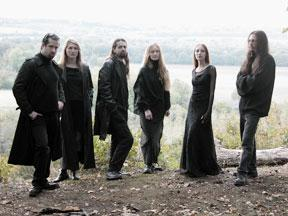
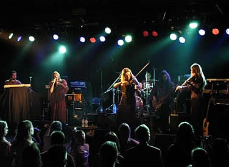

Fundada em fevereiro de 1996,
a banda francesa Dark Sanctuary já trazia uma proposta
musical interessante: a combinação de elementos
folk (folclórico), medieval e neoclássico. Porém,
em sua formação inicial contava apenas com Arkdae
(teclados) e Marquise Ermia (vocais).
Foi com esta formação
que o Dark Sanctuary produziu seu primeiro trabalho. O mini CD
intitulado Funeral Cry, gravado no "Music Live Studio",
continha apenas uma faixa de quase 20 minutos de duração,
foi lançado em 1997 com uma tiragem de 500 cópias.
No ano seguinte, Arkdae e Marquise convidaram outros músicos
a participarem da banda. Deste modo, Hylgaryss (teclado), Sombre
Cÿr (percussão) e Eliane (violino) passaram a integrar
o Dark Sanctuary. Em seguida, em julho, com esta formação,
a banda iniciou as gravações do segundo trabalho.
Em setembro fez sua primeira apresentação em público.
O
álbum Royaume Mélancolique foi lançado
em abril de 1999 e traz nove faixas que deixam claro a proposta
do Dark Sanctuary. A última música, Anathème,
tem mais de 13 minutos de duração e é um
dos destaques, juntamente com Valley of the Pain e L’ombre
Triste. Nesta mesma época, a faixa L'autre monde
integra a coletânea Metal Explosion Vol. 12.
Em novembro de 1999, a banda
assinou contrato com a gravadora "Wounded Love Records"
e uma nova violinista, Marguerite, passou a compor a formação.
Em março do ano seguinte, deu início às gravações
do novo álbum. De Lumière et d'Obscurité
foi lançado em novembro. Entre as treze faixas que o compõem,
destaca-se Rêve Mortuaire, uma "canção
de ninar" com um refrão repetitivo, suave e hipnótico;
além da releitura de Summoning of the Muse, um
"mantra" gravado originalmente pelo Dead Can Dance.
Infelizmente após
o término das gravações, Marquise Ermia,
uma das fundadoras do Dark Sanctuary, abandonou a banda para dedicar-se
aos estudos. Para substituí-la, a cantora Dame Pandora
foi convidada. Ainda em 2000, a coletânea
D-Side sampler N°1 traz a música Cet enfer
au paradis, lançada originalmente em De Lumière
et d'Obscurité. Em fevereiro de 2001, é a faixa
título do CD De Lumière et d'Obscurité
que integra a coletânea Elegy sampler N°14.
O single Vie ephémère
foi gravado em março de 2002, na Alemanha, e lançado
em junho com uma tiragem de 1500 cópias. Além da
faixa título, trazia também Seul, face au sinistre,
com quase sete minutos e meio de duração. Enquanto
isso, a música Assombrissement de l'âme
é integrada à coletânea Elegy sampler
N°24 e Vie éphémère compõe
o CD D-Side sampler N°12.
Neste mesmo período
o Dark Sanctuary grava, também na Alemanha, o álbum
L'être las - L'envers du miroir; porém,
foi lançado apenas em fevereiro de 2003. L'être
las - L'envers du miroir é composto por 14 músicas,
incluindo Vie ephémère do single anterior,
e foi muito bem recebido pela crítica na Alemanha e França,
sendo o grande responsável pelo avanço que a banda
conseguiu em sua popularidade.
Após duas apresentações
na França, a banda retorna à Alemanha e produz,
entre agosto e setembro de 2003, o single promocional La Clameur
du Silence. Contendo somente uma música na versão
Radio Edit. Este trabalho teve apenas 50 cópias
para distribuição entre as rádios.
Paralelamente,
ainda na Alemanha, no estúdio "Klangschmiede
Studio E", estava sendo gravado o álbum Les
Mémoires Blessées. Este CD traz em sua
abertura a música do single anterior, La Clameur
du Silence, seguida de mais doze canções
cuidadosamente produzidas e arranjadas entre os vocais de
Dame Pandora, teclados, violinos e percussão; sendo
um dos trabalhos mais sofisticados e também um dos
mais melancólicos realizados até aquele momento.
Les Mémoires
Blessées foi lançado em fevereiro de 2004 e
fortaleceu a trilha do Dark Sanctuary e do estilo musical que
eles mesmos haviam criado.
Através deste disco,
a banda foi convidada a participar do famoso festival "Gothik
Treffen", em Leipzig, na Alemanha. Nos meses seguintes, a
música La Clameur du Silence (Radio Edit) compõe
a coletânea Elegy sampler N°32 e Présence
é parte da trilha de D-Side sampler N°21.
Entre maio, junho e julho, o Dark Sanctuary apresenta-se na Espanha,
França e Alemanha.
Em junho de 2005 lança,
pelo selo "Projekt" e apenas nos EUA, sua primeira compilação
de sucessos: Thoughts: 9 years in the sanctuary, trazendo
músicas como La chute de l'ange, L'ombre triste
e Les larmes du méprisé. No mês seguinte,
a banda retorna à Alemanha, ao estúdio "E-Klangschmiede",
e grava simultaneamente dois álbuns: Exaudi Vocem Meam
- Part 1 e Exaudi Vocem Meam - Part 2. Em setembro,
participa da coletânea Summoning of the muse: a tribute
to Dead Can Dance, ao lado de bandas como Stoa,
Arcana, Black tape for a blue girl, Chandeen,
entre outras.
Lançado em novembro
do mesmo ano, Exaudi Vocem Meam - Part 1 é composto
por onze faixas que deixam evidente o amadurecimento musical obtido
ao longo dos anos. Neste trabalho, as músicas são
mais extensas e trabalhadas em várias tonalidades e movimentos,
dando a impressão de "várias músicas
numa só". Destaque para as faixas Ouverture,
Cristal e Memento Mei.
Em março de 2006,
a banda anuncia em seu site oficial a inclusão do percussionista
Alexis. A partir deste momento até outubro, o Dark Sanctuary
excursiona pela Europa e faz apresentações na França,
Holanda, Alemanha, Suíça e Espanha. No mês
seguinte é lançado Exaudi Vocem Meam - Part
2, com onze músicas que dão continuidade à
sofisticação e requinte do trabalho anterior.
Em 2007 a banda apresenta-se em várias
turnês e festivais pela Europa. No ano seguinte já
iniciam-se os preparativos para o próximo trabalho. No
entanto, em novembro, a banda comunica em seu website o desligamento
de Eliane e Marguerite por motivos não divulgados.
Em meados de 2009, é lançado oficialmente
o novo trabalho com o título de Dark Sanctuary.
O mais recente álbum da banda francesa foi gravado no próprio
estúdio da banda e traz doze faixas com a mesma atmosfera
melancólica e sombria que caracteriza o Dark Sanctuary.
Os trabalhos gráficos foram elaborados pela ilustradora
valenciana Victoria Francès.
Apesar de ser rotulada como
"Dark Atmospheric", não é possível
associar o Dark Sanctuary à apenas um estilo musical. A
diversidade de músicos e instrumentos podem atribuir várias
faces a um mesmo trabalho e à totalidade da carreira; oscilando
entre os timbres atmosféricos, passando pelo folk, medieval
e neoclássico; além de letras compostas em francês
e inglês. Por este motivo, pode-se esperar que os próximos
discos tragam sonoridades diversificadas, mas sempre com o requinte
e a doce melancolia que caracteriza seu trabalho ao longo destes
anos.
Por
Spectrum